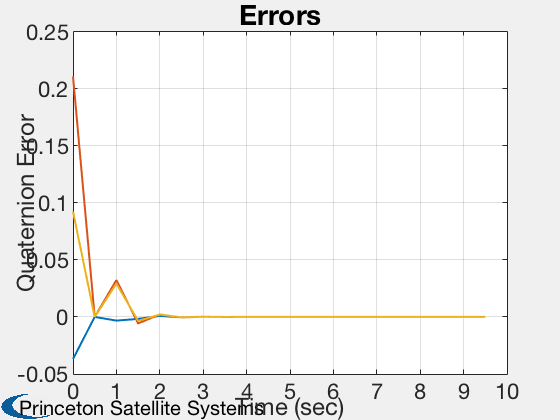
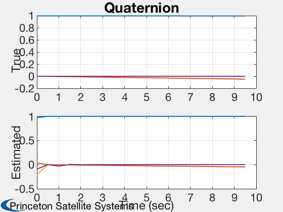
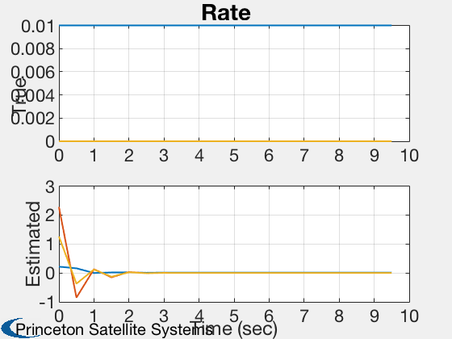
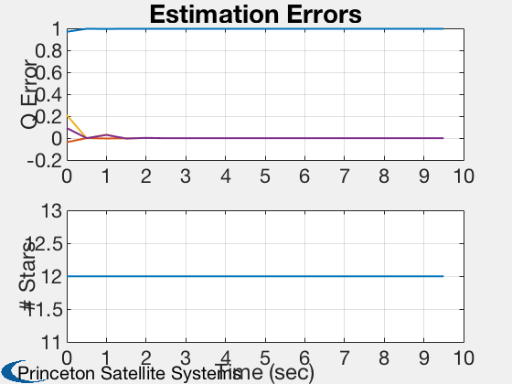

Contents
Test a star sensor attitude determination system.
This system does not use gyros. dT is the time step for the attitude determination system. You can numerically integrate with a smaller time step by setting nInt > 1.
See also AttDetNoGyros, StarSensor, QMult, QPose, QUnit, Plot2D, RK4, RandSC
%--------------------------------------------------------------------------
%-------------------------------------------------------------------------- % Copyright 1998, 2017 Princeton Satellite Systems, Inc. % All rights reserved. %-------------------------------------------------------------------------- % Since version 3. % 2017.1 Made compatible with StarIDPyramid. %--------------------------------------------------------------------------
Setup
rng(0); % Constants degToRad = pi/180; % Simulation data nInt = 2; % Spacecraft data inr = [1000 0 0;0 2000 0; 0 0 2000]; invInr = inv(inr); torque = zeros(3,1); % Gyro data uRIG = eye(3); % User inputs fOV = 30*degToRad; fScale = 1; nStars = 1000; qBToS = [cos(pi/4); 0; sin(pi/4); 0]; uS = [0 0 1]'; nPixels = 1024; angRes = 5*fOV/nPixels; options = StarIDPyramid; options.pixelMapScale = fScale;
Initialization
Initial state
q0 = [1;0;0;0]; wo = 0.01; bias = [0;0;0]; omega = [wo;0;0]; intRate = [0;0;0]; x = [q0;omega;intRate;bias]; % True state % Gyro information nRWRIG = zeros(3,1); nBRIG = zeros(3,1); nORIG = zeros(3,1); betaRIG = zeros(3,1); % Simulation information nSim = 20; dT = 0.5; % Set up arrays xPlot = zeros(13,nSim); qErrPlot = zeros( 4,nSim); wPlot = zeros( 3,nSim); tPlot = zeros( 1,nSim); qEPlot = zeros( 4,nSim); sDPlot = zeros( 1,nSim); % Estimation initialization p = diag([0.01 0.01 0.01]); % State covariance Q = eye(3); % Plant noise covariance r = 0.0001; % Star centroid covariance q = QUnit([1;0.1;0.4;0.2]); % Initial estimate % Create a random star catalog [starMatrix,starCatalog] = RandSC(nStars,2); dStarData = StarDataGeneration( starCatalog, fOV*sqrt(2), angRes ); starData = struct('starMatrix',dStarData.starMatrix,'starID',[],'uMeas',[],'uCatalog',[]); options = StarIDPyramid; options.pixelMapScale = fScale;
StarDataGeneration: Eliminating stars that cannot be separated based on the input angular resolution.
StarDataGeneration: 2 stars will be eliminated that are too close to other stars.
998 stars will be in the reduced catalog.
Run the simulation
t = 0; qOld = q; dTSim = dT/nInt; for i = 1:nSim % Attitude Determination starSensorData = StarSensor( x(1:4), qBToS, uS, dStarData.starMatrix, fOV, fScale ); % Star identification if( ~isempty(starSensorData) ) starMeas.pixelIntensity = starSensorData(1,:); starMeas.pixelLocation = starSensorData(2:3,:); [starData.starID,starData.uMeas,starData.uCatalog] = StarIDPyramid( starMeas, dStarData, options ); else starData.starID = []; starData.uMeas = []; starData.uCatalog = []; end [q, p, qOld, omega] = StellarAttDetEKFNoGyros( q, qOld, omega, dT, p, Q, r, qBToS, starSensorData, starData, fScale ); % Plotting qErrPlot(:,i) = QMult(QPose(q),x(1:4)); wPlot(:,i) = omega; xPlot(:,i) = x; tPlot(i) = t; qEPlot(:,i) = q; sDPlot(:,i) = length(starData.starID); % Simulation for k = 1:nInt x = RK4( @FRBwRIG, x, dTSim, t, inr, invInr, torque, uRIG, nRWRIG, nBRIG, betaRIG ); t = t + dTSim; end end
StarMeas: Acquiring
Plot results
[t, tL] = TimeLabl(tPlot); yL1 = 'Quaternion Error'; yL2 = {'True' 'Estimated'}; yL3 = {'Q Error' '# Stars'}; Plot2D( t, qErrPlot(2:4,:), tL, yL1, 'Errors') Plot2D( t, [xPlot(1:4,:); qEPlot], tL, yL2, 'Quaternion', 'lin', {'1:4' '5:8'}) Plot2D( t, [xPlot(5:7,:); wPlot], tL, yL2, 'Rate', 'lin', {'1:3' '4:6'}) Plot2D( t, [qErrPlot;sDPlot], tL, yL3, 'Estimation Errors','lin', {'1:4' '5'}) %--------------------------------------   